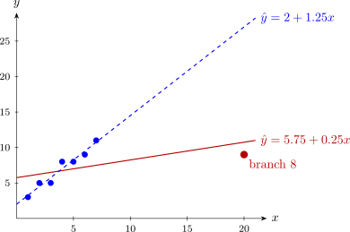

5.5 Applying the measures
| Measure | What it measures | Flag if |
| \(h_{ii}\) | remoteness in \(x\)-space | \(h_{ii} > 2p/n\) |
| \(t_i\) | poor fit (outlier) | \(|t_i| > t_{\alpha /(2n), n - p - 1}\) |
| \(D_i\) | movement of \(\hat {\boldsymbol \beta }\) | \(D_i > 1\) |
| \(\mathrm {DFFITS}_i\) | change in own fitted value | \(|\mathrm {DFFITS}_i| > 2\sqrt {p/n}\) |
| \(\mathrm {DFBETAS}_{j,i}\) | change in \(\hat \beta _j\) | \(|\mathrm {DFBETAS}_{j,i}| > 2/\sqrt {n}\) |
| \(\mathrm {COVRATIO}_i\) | change in precision | outside \(1 \pm 3p/n\) |
The cut-offs are rules of thumb, not tests, and different measures answer different questions: a point can move one coefficient a great deal and leave the others alone, so that DFBETAS flags it and Cook’s distance does not. In practice all of them are computed, and any point that stands out on any of them is examined.
Example 5.5.1. A chain has eight branches. For each, the floor area \(x\) (hundreds of m\(^2\)) and the average weekly sales \(y\) (thousands of kwacha) are:
| Branch | 1 | 2 | 3 | 4 | 5 | 6 | 7 | 8 |
| Area \(x\) | 1 | 2 | 3 | 4 | 5 | 6 | 7 | 20 |
| Sales \(y\) | 3 | 5 | 5 | 8 | 8 | 9 | 11 | 9 |
Branch 8 is a large warehouse store on the edge of town. Fit a straight line and examine the influence of each branch.
Solution. The fit. \(\sum x_i = 48\), \(\sum y_i = 58\), so \(\bar x = 6\) and \(\bar y = 7.25\). Then \begin {align*} S_{xx} &= \sum (x_i - 6)^2 = 25 + 16 + 9 + 4 + 1 + 0 + 1 + 196 = 252, \\ S_{xy} &= \sum (x_i - 6)y_i = -15 - 20 - 15 - 16 - 8 + 0 + 11 + 126 = 63, \end {align*}
so \(\hat \beta _1 = 63/252 = 0.25\), \(\hat \beta _0 = 7.25 - 0.25 \times 6 = 5.75\), and \[ \hat y = 5.75 + 0.25x . \] The residuals are \(y_i - 5.75 - 0.25x_i\), and \(SS_{\mathrm {Res}} = 33.75\), so \(MS_{\mathrm {Res}} = 33.75/6 = 5.625\). Also \(SS_T = 49.5\) and \(R^2 = 0.318\).
Leverage and residuals, with \(h_{ii} = 1/8 + (x_i - 6)^2/252\):
| Branch | \(e_i\) | \(h_{ii}\) | \(r_i\) | \(S^2_{(i)}\) | \(t_i\) |
| 1 | \(-3.00\) | 0.224 | \(-1.436\) | 4.430 | \(-1.618\) |
| 2 | \(-1.25\) | 0.188 | \(-0.585\) | 6.365 | \(-0.550\) |
| 3 | \(-1.50\) | 0.161 | \(-0.690\) | 6.214 | \(-0.657\) |
| 4 | \(1.25\) | 0.141 | \(0.569\) | 6.386 | \(0.534\) |
| 5 | \(1.00\) | 0.129 | \(0.452\) | 6.520 | \(0.420\) |
| 6 | \(1.75\) | 0.125 | \(0.789\) | 6.050 | \(0.761\) |
| 7 | \(3.50\) | 0.129 | \(1.581\) | 3.937 | \(1.890\) |
| 8 | \(-1.75\) | 0.903 | \(-2.366\) | 0.450 | \(-8.367\) |
For branch 8 exactly, \(h_{88} = 1/8 + 196/252 = 1/8 + 7/9 = 65/72\), so \(1 - h_{88} = 7/72\), and \begin {align*} r_8^2 &= \frac {1.75^2}{5.625 \times 7/72} = \frac {3.0625}{0.546875} = 5.6, \\ S^2_{(8)} &= \frac {33.75 - 3.0625/(7/72)}{5} = \frac {33.75 - 31.5}{5} = 0.45, \\ t_8 &= \frac {-1.75}{\sqrt {0.45 \times 7/72}} = \frac {-1.75}{0.2092} = -8.367 . \end {align*}
Branch 8 has by far the highest leverage, \(0.903\) against the cut-off \(2p/n = 0.5\). Its raw residual, \(-1.75\), is smaller than those of branches 1 and 7, and a plot of residuals against fitted values would not single it out. Its R-student residual tells a different story: \(|t_8| = 8.37\) exceeds the Bonferroni value \(t_{0.05/16,\,5} = 4.53\).
Influence measures. With \(p = 2\), \(n = 8\), the cut-offs are \(D_i > 1\), \(|\mathrm {DFFITS}_i| > 2\sqrt {2/8} = 1\), \(|\mathrm {DFBETAS}_{j,i}| > 2/\sqrt 8 = 0.707\) and COVRATIO outside \((0.25, 1.75)\). For branch 8, by Theorems 5.2.3, 5.3.2 and 5.4.3, \begin {align*} D_8 &= \frac {5.6}{2}\cdot \frac {65/72}{7/72} = 2.8 \times \frac {65}{7} = 26, \\ \mathrm {DFFITS}_8 &= -8.367\sqrt {65/7} = -8.367 \times 3.047 = -25.5, \\ \mathrm {COVRATIO}_8 &= \left (\frac {0.45}{5.625}\right )^2\frac {72}{7} = 0.0064 \times 10.29 = 0.066 . \end {align*}
For all eight branches:
| Branch | \(D_i\) | DFFITS | DFBETAS\(_0\) | DFBETAS\(_1\) | COVRATIO |
| 1 | 0.298 | \(-0.870\) | \(-0.866\) | \(0.579\) | 0.799 |
| 2 | 0.040 | \(-0.265\) | \(-0.260\) | \(0.154\) | 1.578 |
| 3 | 0.046 | \(-0.287\) | \(-0.272\) | \(0.136\) | 1.454 |
| 4 | 0.027 | \(0.216\) | \(0.192\) | \(-0.073\) | 1.500 |
| 5 | 0.015 | \(0.162\) | \(0.129\) | \(-0.028\) | 1.543 |
| 6 | 0.044 | \(0.288\) | \(0.196\) | \(0.000\) | 1.322 |
| 7 | 0.185 | \(0.727\) | \(0.396\) | \(0.128\) | 0.563 |
| 8 | 26.0 | \(-25.5\) | \(10.80\) | \(-23.66\) | 0.066 |
Branch 8 is flagged by every measure, and overwhelmingly: \(D_8 = 26\) is twenty-six times the cut-off, and its DFBETAS for the slope says that deleting it changes \(\hat \beta _1\) by almost \(24\) standard errors. The only other flag is a mild one, branch 1’s DFBETAS for the intercept (\(-0.87\)); branch 1 is the point at the far left, and has the largest residual among the others.
The fit without branch 8. The other seven give \(\bar x = 4\), \(\bar y = 7\), \(S_{xx} = 28\), \(S_{xy} = 35\), so \[ \hat y = 2 + 1.25x , \] with \(SS_{\mathrm {Res}} = 2.25\) on \(5\) degrees of freedom (which is \(5S^2_{(8)}\), as it should be) and \(R^2 = 0.951\). The slope is five times as large. This agrees with the deletion formula: in simple regression, deleting observation \(i\) changes the slope by \((x_i - \bar x)e_i/\bigl (S_{xx}(1 - h_{ii})\bigr )\) (Problem 5.7.2), here \[ \frac {14 \times (-1.75)}{252 \times 7/72} = \frac {-24.5}{24.5} = -1 , \] and indeed \(0.25 - 1.25 = -1\).
The two lines are drawn in Figure 11. The seven ordinary branches lie close to a line of slope \(1.25\); the warehouse store, far to the right, sells much less per square metre, and on its own it flattens the fitted line until it fits none of the branches well.

Questions on this section
Stuck on something here? Ask below and it stays attached to this topic.